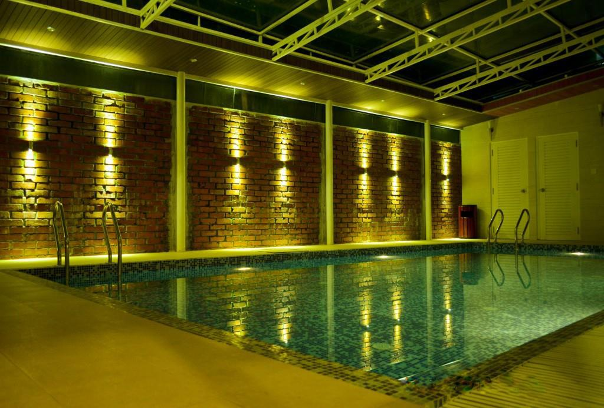
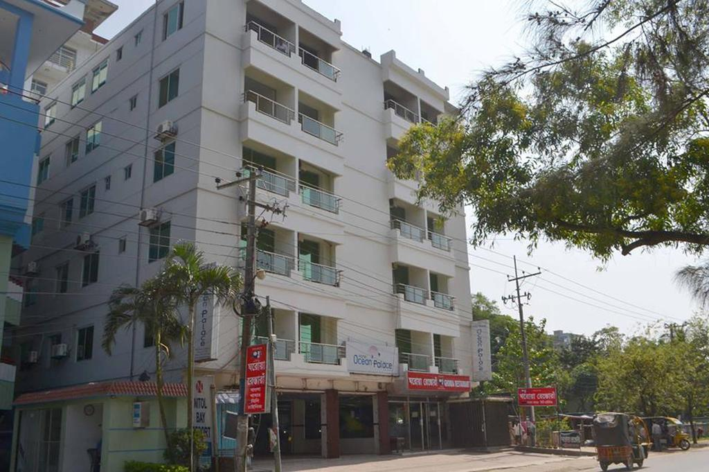
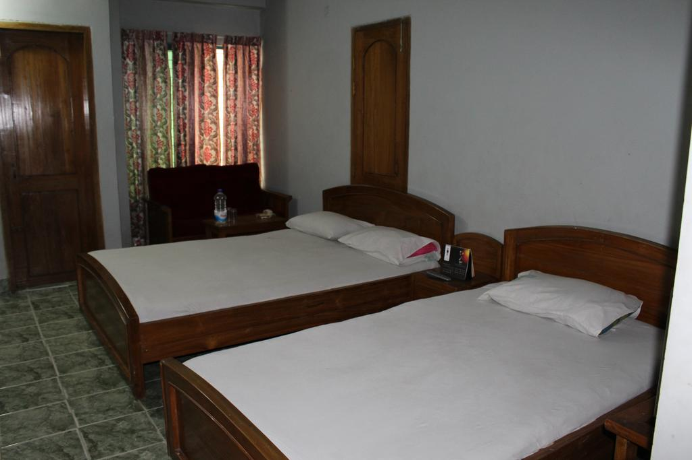

Hotel Kollol
This property is a 4-minute walk from the beach. Hotel Kollol offers accommodations in Saint Martin. Guests can enjoy the on-site restaurant. Free private parking is available on site.
Every room includes a TV. Some units feature a sitting area for your convenience. Certain rooms have views of the sea or city. The rooms are equipped with a private bathroom. Extras include slippers and free toiletries.
There is a 24-hour front desk and gift shop at the property.
The hotel also provides car rental.

Hotel Ocean Palace
This property is a 6-minute walk from the beach. Featuring free WiFi, Hotel Ocean Palace offers accommodations in Saint Martin. Free private parking is available on site.
Each room comes with a flat-screen TV with cable channels. Certain rooms have views of the sea or mountains. Every room includes a private bathroom. For your comfort, you will find slippers and free toiletries.
You will find a shops at the property.
The hotel also provides car rental.

Shayari Eco Resort
Featuring free WiFi, Sea Knight Resort (Vacanza) offers pet-friendly accommodations in Saint Martin. Guests can enjoy the on-site restaurant.
There is a 24-hour front desk at the property.